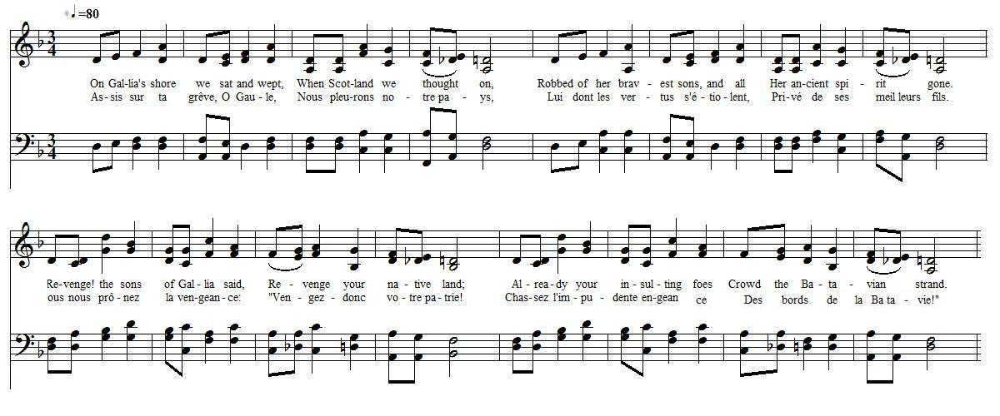

On Gallia's Shore
Sur les côtes de Gaule
By William Hamilton of Bangour (1704 - 1754)
from from the MS at Towneley Hall, page 48and G.S. McQuoid's "Jacobite Songs and Ballads", 1888, p.224, N°106
Tune - Mélodie
Unknown, replaced here by "By the Waters of Babylon"
From "The Presbyterian Hymnal" (apparently a Latvian traditional tune "Kas Dzeidaja")
Tiré du "Presbyterian Hymnal" (il semble qu'il s'agisse d'une mélodie lithuanienne "Kas Dzeidaja")
Sequenced by Christian Souchon

|
To the song:
Composed by William Hamilton of Bangour . "Mr. R. Chambers says that it was probably about the time when the hopes of renewed assistance from France were declining, that William Hamilton wrote this imitation of the Scotch version of the 137th Psalm — a composition of much more than his usual energy, and concluding with an almost prophetic malediction." Source: G.S. McQuoid's "Jacobite Songs and Ballads", 1888, p.224, N°106 However, the Rev. Alexander B. Grosart assigns, in his "English Jacobite Ballads... from the MSS at Towneley Hall" (1877), this "Imitation" to the elder brother of William, John Hamilton who died unmarried in 175o, when the family estate descended to William Hamilton. |
A propos du chant:
Composé par William Hamilton de Bangour . "M. R. Chambers estime que c'est au moment ou les espoirs d'une aide renouvelée de la France commençaient à s'évanouir que William Hamilton écrivit cette imitation de la version écossaise du 137ème Psaume — une composition où il fait preuve d'une véhémence inhabituelle chez lui et qui se termine par une malédiction presque prophétique." Source: G.S. McQuoid's "Jacobite Songs and Ballads", 1888, p.224, N°106 Toutefois, le Révérend Alexander B. Grosart, dans ses "English Jacobite Ballads... from the MSS at Towneley Hall" (1877), attribue cette "Imitation" au frère aîné de William, John Hamilton qui mourut célibataire en 175o, date à laquelle la propriété familiale revint à William. |

|
ON GALLIA'S SHORE WE SAT AND WEPT.
1. On Gallia's shore we sat and wept, When Scotland we thought on, Robbed of her bravest sons, and all Her ancient spirit gone. Revenge ! the sons of Gallia said, Revenge your native land ; Already your insulting foes Crowd the Batavian strand. 2. How shall the sons of freedom e'er For foreign conquest fight ; For power, how wield the sword unsheathed, For liberty and right? If thee, oh Scotland, I forget, Even with my latest breath, May foul dishonour stain my name, And bring a coward's death. 3. May sad remorse of fancied guilt My future days employ, If all thy sacred rights are not Above my chiefest joy. Remember England's children, Lord, Who on Drummossie day, Deaf to the voice of kindred love, Raze, raze it quite, did say. 4. And thou, proud Gallia, faithless friend, Whose ruin is not far, Just Heaven, on thy devoted head, Pour all the woes of war. When thou thy slaughtered little ones, And ravished dames shall see, Such help, such pity, may'st thou have, As Scotland had from thee. Source: "The Jacobite Songs and Ballads" collected by Gilbert S. McQuoid, N°106, page 224, 1888 edition. |
ASSIS SUR TA GREVE, O GAULE
1. Assis sur ta grève, O Gaule, Nous pleurions notre pays, Lui dont les vertus s'étiolent, Privé de ses meilleurs fils. Vous, vous prôniez la vengeance: "Vengez-donc votre patrie! Chassez l'impudente engeance Des bords de la Batavie!" 2. D'hommes nés libres attendre Qu'ils servent des étrangers? Nos bras ne sauraient défendre Que nos droits, nos libertés! Si ton souvenir, Ecosse, Devait un jour me quitter, Qu'on s'éloigne de la fosse Où je gis, déshonoré! 3. Tu peux bien, remords factice, Occuper mes jours futurs, Si des droits sacrés pâtissent De devoirs vains et impurs! O Seigneur, garde en mémoire Ces fils de Britannia Qui sourds aux voix de l'Histoire Hurlaient: "rasez-moi tout ça!" 4. Quant à toi, Gaule traîtresse, Sache ton déclin prochain! Que le Ciel sur toi déverse Un déluge de chagrins! Petits enfants qu'on massacre, Femmes à l'honneur bafoué, N'espérez qu'un simulacre De pitié des Ecossais! (Trad. Christian Souchon (c) 2010) |
Psalm 137
|
King James Bible: Psalms 137 (1611)
1. By the rivers of Babylon, there we sat down, yea, we wept, when we remembered Zion. 2. We hanged our harps upon the willows in the midst thereof. 3. For there they that carried us away captive required of us a song; and they that wasted us required of us mirth, saying, Sing us one of the songs of Zion. 4. How shall we sing the LORD’s song in a strange land? 5. If I forget thee, O Jerusalem, let my right hand forget her cunning. 6. If I do not remember thee, let my tongue cleave to the roof of my mouth; if I prefer not Jerusalem above my chief joy. 7. Remember, O LORD, the children of Edom in the day of Jerusalem; who said, Rase it, rase it, even to the foundation thereof. 8. O daughter of Babylon, who art to be destroyed; happy shall he be, that rewardeth thee as thou hast served us. 9. Happy shall he be, that taketh and dasheth thy little ones against the stones. |
Metrical version from the "Bay Psalmist", 1640
1. The rivers on of Babilon there when wee did sit downe: yea even then wee mourned, when wee remembred Sion. 2. Our Harps wee did hang it amid, upon the willow tree. 3. Because there they that us away led in captivitee, Required of us a song, & thus askt mirth: us waste who laid, sing us among a Sions song, unto us then they said. 4. The lords song sing can wee? being in strangers land. Then let loose her skill my right hand, 5. if I Jerusalem forget. 6. Let cleave my tongue my pallate on, if minde thee doe not I: if chiefe joyes o’er I prize not more Jerusalem my joye. |
Psaume 137, selon "la Bible du Semeur"
1. Au bord des fleuves de Babylone, nous nous étions assis et nous pleurions en pensant à Sion. 2. Aux saules de leurs rives, nous avions suspendu nos harpes. 3. Ceux qui nous avaient déportés, nous demandaient des chants, nos oppresseurs voulaient des airs joyeux: «Chantez-nous, disaient-ils, quelque chant de Sion!» 4. Comment peut-on chanter les chants de l'Eternel sur un sol étranger? 5. Si jamais je t'oublie, Jérusalem, que ma main droite perde sa force! 6. Oui, que ma langue se colle à mon palais si je ne pense plus à toi, Jérusalem, si je ne te mets plus avant toute autre joie. 7. Souviens-toi, Eternel, des Edomites qui en ce jour du malheur de Jérusalem, criaient bien fort: «Rasez-la donc, rasez-la jusqu'aux fondations!» 8. O Babylone, tu seras dévastée! Heureux qui te rendra ce que tu nous as fait! 9. Heureux qui saisira tes nourrissons pour les briser contre le roc! |
|
|
||